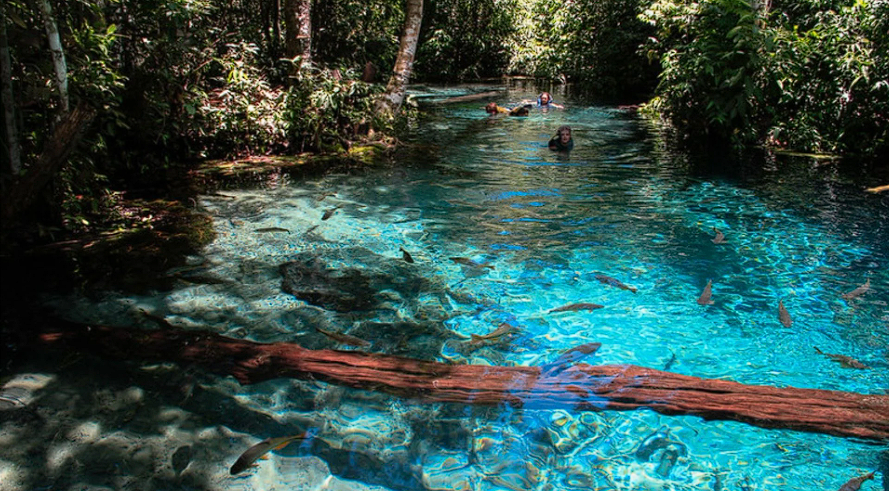

Cuiabá
Cidade Verde, porta sul da Amazônia
1. Um pouco sobre
O Cuiabá, capital de Mato Grosso, é uma cidade que se destaca por ser a porta de entrada para o Pantanal, um dos maiores biomas do mundo, e por preservar ricas expressões culturais e históricas que encantam os visitantes. Com influências indígenas, africanas e europeias, Cuiabá revela sua identidade por meio da arquitetura colonial, da gastronomia marcante e de festas populares vibrantes.
2. Pontos Turísticos
Entre os principais atrativos turísticos de Cuiabá, destaca-se o Parque Mãe Bonifácia, um refúgio natural com trilhas e animais silvestres. O Museu do Morro da Caixa D’Água Velha conta a história da cidade de forma interativa, enquanto a Catedral Metropolitana impressiona pela arquitetura e importância religiosa.
Nobres
Cidade das Águas

1. Origem
A região do atual município de Nobres foi ponto de passagem, no início do movimento garimpeiro em Mato Grosso, no sentido sul/oeste, que começou em 1747, entre Cuiabá e Diamantino. É território habitado imemorialmente por povos indígenas da tribo bacairi e é uma região rica em belezas naturais. Nos meandros da serra do Tombador e do distrito de Bom Jardim escondem-se verdadeiras maravilhas esculpidas pela natureza, com inúmeras cachoeiras, lagos, rios e grutas – algumas totalmente inexploradas.
2. Pontos Turísticos
O município de Nobres possui mais de quinze pontos turísticos prontos para recebê-lo, sendo os principais Aquário Encantado, Cachoeira Serra Azul, Balneário Estivado, Mirante do Cerrado e o Duto do quebó onde é possível fazer um passeio de boia cross pelo mesmo.